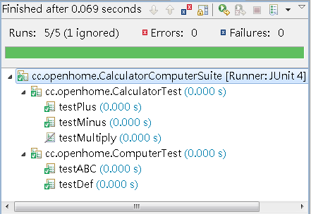
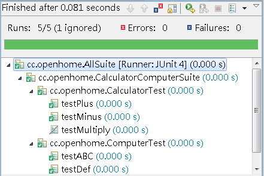
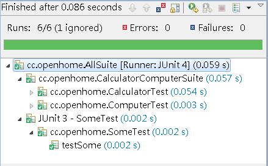

|
|
在 使用 TestSuite 中介紹過，JUnit 3.x中，你可以使用TestSuite
來組織測試，如果你的測試案例類別中有個suite()方法，那TestRunner會使用它所傳回的TestSuite實例來運行測試，如果你的測試案
例類別中沒有suite()方法，那麼TestRunner會為你建立TestSuite實例，尋找你的測試案例類別中所有testXXX()方法進行測
試。 在JUnit 4.x中，會使用Suite來組織測試，但並非透過suite()方法的定義，預設上，JUnit 4的Runner會自動建立預設的Suite，運用反射尋找所有具@Test標註的方法，為每個方法建立測試類別實例並執行。 如果你想要一次運行某個套件中所有的測試類別，在IDE中有個簡便的方式，例如在Eclipse中，就是在套件上按右鍵，執行「Run As/JUnit Test」，IDE中的JUnit 4 runner，會自動尋找所有類別中是否有相關標註並執行測試。 你也許想要自行組織某幾個測試類別一同測試，這時可以使用Suite來組織。例如： package cc.openhome;
import org.junit.runner.RunWith; import org.junit.runners.Suite; import org.junit.runners.Suite.SuiteClasses; @RunWith(value = Suite.class) @SuiteClasses(value={CalculatorTest.class, ComputerTest.class}) public class CalculatorComputerSuite { } 這會將兩個測試類別組織在一起測試。例如在Eclipse中，若於原始碼上按右鍵，執行「Run As/JUnit Test」，則結果如下：  如果某些類別是作為組織其它測試類別的Suite類別，則也可以再將這些Suite類別再組織在一起。例如： package cc.openhome;
import org.junit.runner.RunWith; import org.junit.runners.Suite; import org.junit.runners.Suite.SuiteClasses; @RunWith(value = Suite.class) @SuiteClasses(value={CalculatorComputerSuite.class, OtherSuite.class}) public class AllSuite { } 在Eclipse中運行的畫面如下：  Suite也可以結合JUnit 3的測試案例一同測試，如果JUnit 3的測試案例沒有定義suite()，則會自動建立TestSuite實例並找出所有testXXX()方法，如果JUnit 3的測試案例定義有suite()，就會使用傳回的TestSuite進行測試。例如若你有個JUnit 3測試案例： package cc.openhome;
import junit.framework.Test; import junit.framework.TestCase; import junit.framework.TestSuite; public class SomeTest extends TestCase { public void testSome() { // 作一些測試 } public static Test suite() { TestSuite suite = new TestSuite("JUnit 3 - SomeTest"); suite.addTestSuite(SomeTest.class); return suite; } } 若寫了以下的JUnit 4，組織先前的CalculatorComputerSuite與上面的SomeTest也是可行的： package cc.openhome;
import org.junit.runner.RunWith; import org.junit.runners.Suite; import org.junit.runners.Suite.SuiteClasses; @RunWith(value = Suite.class) @SuiteClasses(value={CalculatorComputerSuite.class, SomeTest.class}) public class AllSuite { } 在Eclipse中的畫面如下：  |